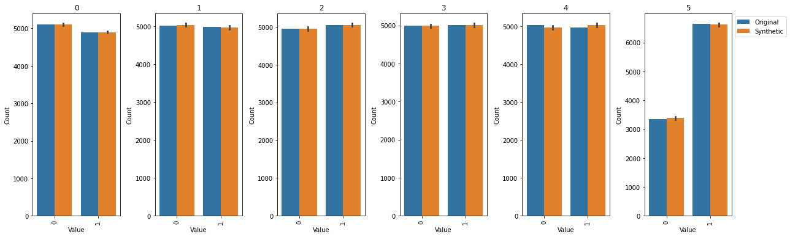

Twinify example: NapsuMQ usage
Contents
Twinify example: NapsuMQ usage#
%%capture
import jax.numpy as jnp
import numpy as np
import pandas as pd
import d3p
from twinify.napsu_mq.napsu_mq import NapsuMQModel
from twinify.napsu_mq import rubins_rules
from tests.napsu_mq.binary_logistic_regression_generator import BinaryLogisticRegressionDataGenerator
import seaborn as sns
import matplotlib.pyplot as plt
import statsmodels.api as sm
rng = d3p.random.PRNGKey(42526709)
data_gen_rng, inference_rng = d3p.random.split(rng)
data_gen_rng = d3p.random.convert_to_jax_rng_key(data_gen_rng)
Prepare dataset#
Generate 10 000 rows of datapoints for logistic regression task with true coefficients (1, 3, -4, 2, 1)
coefficients = [1.0, 3.0, -4.0, 2.0, 1.0]
dataset = BinaryLogisticRegressionDataGenerator(jnp.array(coefficients)).generate_data(n=10000, rng_key=data_gen_rng)
orig_df = pd.DataFrame(dataset, dtype="int")
n, d = orig_df.shape
orig_df
| 0 | 1 | 2 | 3 | 4 | 5 | |
|---|---|---|---|---|---|---|
| 0 | 1 | 0 | 1 | 1 | 1 | 1 |
| 1 | 1 | 0 | 1 | 0 | 0 | 0 |
| 2 | 1 | 1 | 0 | 0 | 1 | 1 |
| 3 | 1 | 1 | 1 | 0 | 0 | 0 |
| 4 | 1 | 0 | 0 | 1 | 0 | 1 |
| ... | ... | ... | ... | ... | ... | ... |
| 9995 | 1 | 0 | 0 | 1 | 0 | 1 |
| 9996 | 1 | 1 | 1 | 0 | 1 | 0 |
| 9997 | 1 | 1 | 0 | 0 | 0 | 1 |
| 9998 | 1 | 1 | 0 | 0 | 1 | 1 |
| 9999 | 1 | 1 | 0 | 1 | 1 | 1 |
10000 rows × 6 columns
Create NapsuMQModel and fit the probabilistic model with DP#
# Fitting the model takes few minutes
rng = d3p.random.PRNGKey(74249069)
inference_rng, sampling_rng = d3p.random.split(rng)
# We can define column marginal relationships that we want to preserve
required_marginals = [(0, 1), (0, 5), (3, 5)]
model = NapsuMQModel(required_marginals=required_marginals, use_laplace_approximation=False)
result = model.fit(
data=orig_df,
rng=inference_rng,
epsilon=1,
delta=(n ** (-2))
)
4it [00:00, 6223.00it/s]0:00<?, ?it/s]
2it [00:00, 10230.01it/s]
2it [00:00, 12905.55it/s]
2it [00:00, 13774.40it/s]
2it [00:00, 7084.97it/s]
4it [00:00, 5417.25it/s]
4it [00:00, 8000.58it/s]
4it [00:00, 8512.03it/s]
2it [00:00, 7752.87it/s]
2it [00:00, 6136.51it/s]
4it [00:00, 3941.09it/s]
100%|██████████| 12/12 [00:00<00:00, 282.68it/s]
100%|██████████| 5/5 [00:00<00:00, 62230.03it/s]
100%|██████████| 6/6 [00:00<00:00, 15060.34it/s]
sample: 100%|██████████| 2800/2800 [00:27<00:00, 101.81it/s, 31 steps of size 1.95e-01. acc. prob=0.90]
sample: 100%|██████████| 2800/2800 [00:02<00:00, 1339.43it/s, 31 steps of size 1.56e-01. acc. prob=0.94]
sample: 100%|██████████| 2800/2800 [00:02<00:00, 1373.09it/s, 31 steps of size 1.72e-01. acc. prob=0.92]
sample: 100%|██████████| 2800/2800 [00:01<00:00, 1406.52it/s, 15 steps of size 1.89e-01. acc. prob=0.90]
Create a synthetic dataset using probabilistic model#
synthetic_dfs = result.generate(
rng=sampling_rng,
num_data_per_parameter_sample=10000,
num_parameter_samples=10,
single_dataframe=False
)
Plot and compare the results#
def value_count_list(df, col, type):
counts = df[col].value_counts()
return [(value, counts[value], type) for value in counts.index]
def value_count_df(orig_df, synthetic_dfs, col):
vl_list = value_count_list(orig_df, col, "Original")
for synthetic_df in synthetic_dfs:
vl_list += (value_count_list(synthetic_df, col, "Synthetic"))
return pd.DataFrame.from_records(vl_list, columns=["Value", "Count", "Type"])
value_count_dfs = { col: value_count_df(orig_df, synthetic_dfs, col) for col in orig_df.columns }
fig, axes = plt.subplots(1, len(value_count_dfs.items()), figsize=(3 * len(value_count_dfs.items()), 5.5))
for i, (key, value) in enumerate(value_count_dfs.items()):
ax = axes[i]
ax.set_title(key)
ax.tick_params("x", labelrotation=90)
sns.barplot(x="Value", y="Count", data=value_count_dfs[key], hue="Type", estimator=np.mean, ax=ax)
if i < len(value_count_dfs.items()) - 1:
ax.get_legend().remove()
else:
ax.legend(loc="upper left", bbox_to_anchor=(1.00, 1))
plt.tight_layout()
plt.show()
